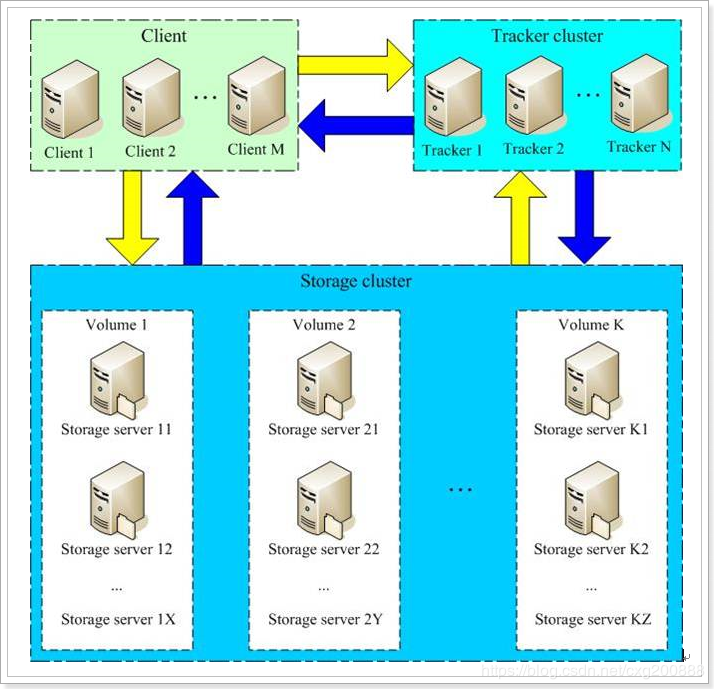
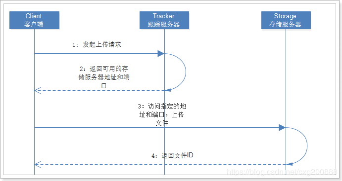
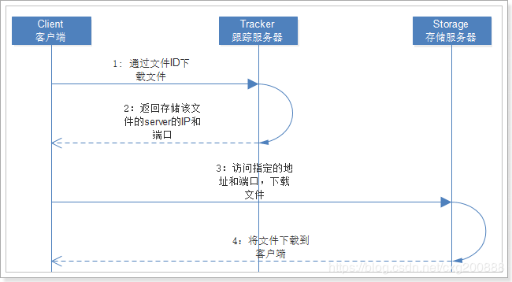
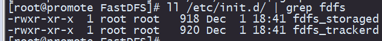
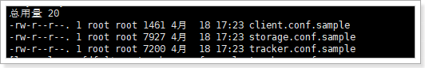
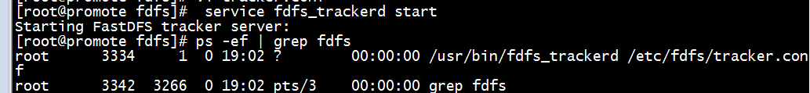
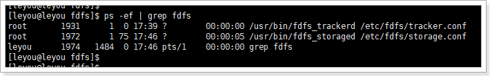
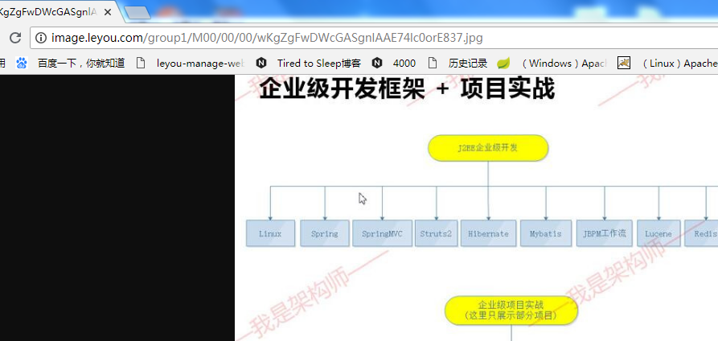

1.FastDFS
1.1.什么是分布式文件系统
分布式文件系统（Distributed File System）是指文件系统管理的物理存储资源不一定直接连接在本地节点上，而是通过计算机网络与节点相连。
通俗来讲：
- 传统文件系统管理的文件就存储在本机。
- 分布式文件系统管理的文件存储在很多机器，这些机器通过网络连接，要被统一管理。无论是上传或者访问文件，都需要通过管理中心来访问
1.2.什么是FastDFS
FastDFS是由淘宝的余庆先生所开发的一个轻量级、高性能的开源分布式文件系统。用纯C语言开发，功能丰富：
- 文件存储
- 文件同步
- 文件访问（上传、下载）
- 存取负载均衡
- 在线扩容
适合有大容量存储需求的应用或系统。同类的分布式文件系统有谷歌的GFS、HDFS（Hadoop）、TFS（淘宝）等。
1.3.FastDFS的架构
1.3.1.架构图
先上图：

FastDFS两个主要的角色：Tracker Server 和 Storage Server 。
- Tracker Server：跟踪服务器，主要负责调度storage节点与client通信，在访问上起负载均衡的作用，和记录storage节点的运行状态，是连接client和storage节点的枢纽。
- Storage Server：存储服务器，保存文件和文件的meta data（元数据），每个storage server会启动一个单独的线程主动向Tracker cluster中每个tracker server报告其状态信息，包括磁盘使用情况，文件同步情况及文件上传下载次数统计等信息
- Group：文件组，多台Storage Server的集群。上传一个文件到同组内的一台机器上后，FastDFS会将该文件即时同步到同组内的其它所有机器上，起到备份的作用。不同组的服务器，保存的数据不同，而且相互独立，不进行通信。
- Tracker Cluster：跟踪服务器的集群，有一组Tracker Server（跟踪服务器）组成。
- Storage Cluster ：存储集群，有多个Group组成。
1.3.2.上传和下载流程
上传

- Client通过Tracker server查找可用的Storage server。
- Tracker server向Client返回一台可用的Storage server的IP地址和端口号。
- Client直接通过Tracker server返回的IP地址和端口与其中一台Storage server建立连接并进行文件上传。
- 上传完成，Storage server返回Client一个文件ID，文件上传结束。
下载

- Client通过Tracker server查找要下载文件所在的的Storage server。
- Tracker server向Client返回包含指定文件的某个Storage server的IP地址和端口号。
- Client直接通过Tracker server返回的IP地址和端口与其中一台Storage server建立连接并指定要下载文件。
- 下载文件成功。
2. Centos下安装FastDFS
2.1 安装准备
将下面文件上传到linux下的/home/leyou/fdfs目录:
- FastDFS_v5.08.tar.gz
- fastdfs-nginx-module_v1.16.tar.gz
- libevent-2.0.22-stable.tar.gz
- libfastcommon-master.zip
2.2 安装依赖
FastDFS运行需要一些依赖，在课前资料提供的虚拟中已经安装好了这些依赖，如果大家想要从头学习，可以按下面方式安装：
2.2.1 安装GCC依赖
GCC用来对C语言代码进行编译运行，使用yum命令安装：
1 | yum -y install gcc |
2.2.2 安装unzip工具
unzip工具可以帮我们对压缩包进行解压
1 | yum install -y unzip zip |
2.2.3 安装libevent
1 | yum -y install libevent |
2.2.4 安装Nginx所需依赖
1 | yum -y install pcre pcre-devel zlib zlib-devel openssl openssl-devel |
2.2.5 安装libfastcommon-master
这个没有yum包，只能通过编译安装：
解压刚刚上传的
libfastcommon-master.zip1
[root@promote fdfs]# unzip libfastcommon-master.zip
进入解压完成的目录：
1
[root@promote fdfs]# cd libfastcommon-master
编译并且安装：
1
[root@promote libfastcommon-master]# ./make.sh && ./make.sh install
到这里为止，所有依赖都已经安装完毕，接下来我们安装FastDFS：
2.3 安装FastDFS
2.3.1 编译安装
这里我们也采用编译安装，步骤与刚才的编译安装方式一样：
解压
1
[root@promote fdfs]# tar -xvf FastDFS_v5.08.tar.gz
进入目录
1
[root@promote fdfs]# cd FastDFS
编译并安装
1
[root@promote FastDFS]# ./make.sh && ./make.sh install
校验安装结果
1）安装完成，我们应该能在/etc/init.d/目录，通过命令ll /etc/init.d/ | grep fdfs看到FastDFS提供的启动脚本：

其中：
fdfs_trackerd是tracker启动脚本fdfs_storaged是storage启动脚本
2）我们可以在 /etc/fdfs目录，通过命令查看到以下配置文件模板：

其中：
tarcker.conf.sample是tracker的配置文件模板storage.conf.sample是storage的配置文件模板client.conf.sample是客户端的配置文件模板
2.3.2 /etc/fdfs中修改tracker
FastDFS的tracker和storage在刚刚的安装过程中，都已经被安装了，因此我们安装这两种角色的方式是一样的。不同的是，两种需要不同的配置文件。
我们要启动tracker，就修改刚刚看到的tarcker.conf，并且启动fdfs_trackerd脚本即可。
- 编辑tracker配置
首先我们将模板文件进行赋值和重命名：
1 | [root@promote ~]# cd /etc/fdfs/ |
打开tracker.conf，修改base_path配置：
1 | base_path=/leyou/fdfs/tracker # tracker的数据和日志存放目录 |
- 创建目录
刚刚配置的目录可能不存在，我们在根目录上创建leyou 出来
1 | [root@promote fdfs]# mkdir -p /leyou/fdfs/tracker |
启动tracker
我们可以使用
sh /etc/init.d/fdfs_trackerd启动，不过安装过程中，fdfs已经被设置为系统服务，我们可以采用熟悉的服务启动方式：
1 | [root@promote fdfs]# service fdfs_trackerd start # 启动fdfs_trackerd服务，停止用stop |
查看是否运行
1
[root@promote fdfs]# ps -ef | grep fdfs

另外，我们可以通过以下命令，设置tracker开机启动：
1 | chkconfig fdfs_trackerd on |
2.3.3 /etc/fdfs中启动storage
我们要启动tracker，就修改刚刚看到的tarcker.conf，并且启动fdfs_trackerd脚本即可。
- 编辑storage配置
首先我们将模板文件进行赋值和重命名：
1 | 在etc/fdfs目录下 |
打开storage.conf，修改base_path配置：
1 | base_path=/leyou/fdfs/storage # storage的数据和日志存放目录 |
- 创建目录
刚刚配置的目录可能不存在，我们创建出来
1 | [root@promote fdfs]# mkdir -p /leyou/fdfs/storage |
启动storage
我们可以使用
sh /etc/init.d/fdfs_storaged启动，同样我们可以用服务启动方式：
1 | [root@promote fdfs]# service fdfs_storaged start # 启动fdfs_storaged服务，停止用stop |
另外，我们可以通过以下命令，设置tracker开机启动：
1 | [root@promote fdfs]# chkconfig fdfs_storaged on |
最后，通过ps -ef | grep fdfs 查看进程：

2.3.4.测试上传
进入/etc/fdfs目录，修改client.config
修改配置
1 | tracker_service=192.168.25.128:22122 |
运行：
/usr/bin/fdfs_upload_file：脚本
/etc/fdfs/client.conf ：配置文件
/image：要上传文件的 目录
1 | [root@promote fdfs]# /usr/bin/fdfs_upload_file /etc/fdfs/client.conf /image/1.jpg |
成功后返回图片的id：
group1/M00/00/00/wKgZgFwDWcGASgnlAAE74lc0orE837.jpg
group1：组信息
M00：对应store_path0
/00/00：磁盘路径
2.4 安装Nginx及FastDFS模块
2.4.1 FastDFS的Nginx模块
解压/home/leyou/fdfs下的
1
[root@promote fdfs]# tar -xvf fastdfs-nginx-module_v1.16.tar.gz
配置config文件
1
2
3
4
5
6进入配置目录
[root@promote fdfs]# cd /home/leyou/fdfs/fastdfs-nginx-module/src/
修改配置
[root@promote src]# vim config
执行下面命令（将配置中的/usr/local改为/usr）：
:%s+/usr/local/+/usr/+g配置mod_fastdfs.conf
1
2
3
4将src目录下的mod_fastdfs.conf复制到 /etc/fdfs目录：
[root@promote src]# cp mod_fastdfs.conf /etc/fdfs/
编辑该文件
[root@promote src]# vim /etc/fdfs/mod_fastdfs.cof修改一下配置：
1
2
3
4connect_timeout=10 # 客户端访问文件连接超时时长（单位：秒）
tracker_server=192.168.25.128:22122 # tracker服务IP和端口
url_have_group_name=true # 访问链接前缀加上组名
store_path0=/leyou/fdfs/storage # 文件存储路径复制 FastDFS的部分配置文件到/etc/fdfs目录
1
2[root@promote src]# cd /home/leyou/fdfs/FastDFS/conf/
[root@promote conf]# http.conf mime.types /etc/fdfs/
2.4.2 配置Nginx
已经安装了nginx中配置
配置
在/home/leyou/nginx目录下
1
[root@promote nginx]# ./configure --prefix=/opt/nginx --sbin-path=/usr/bin/nginx --add-module=/home/leyou/fdfs/fastdfs-nginx-module/src
编译安装
1
[root@promote nginx]# make
备份之前的/usr/bin/nginx
1
[root@promote nginx]# mv /usr/bin/nginx /usr/bin/nginx-bck
用刚刚编译的nginx替换之前安装的nginx
1
[root@promote nginx]# cp /home/leyou/nginx/objs/nginx /usr/bin/
配置nginx整合fastdfs-module模块
我们需要修改nginx配置文件，在/opt/nginx/config/nginx.conf文件中：
1
[root@promote nginx]# vim /opt/nginx/conf/nginx.conf
将文件中，添加如下代码：
1
2
3
4
5
6
7
8
9
10
11
12
13
14
15
16
17
18
19
20server {
listen 80;
server_name image.taotao.com;
# 监听域名中带有group的，交给FastDFS模块处理
location ~/group([0-9])/ {
ngx_fastdfs_module;
}
location / {
root html;
index index.html index.htm;
}
error_page 500 502 503 504 /50x.html;
location = /50x.html {
root html;
}
}启动
1
2
3
4[root@promote objs]# nginx # 启动
ngx_http_fastdfs_set pid=8152 # 启动成功
[root@promote objs]# nginx -s stop # 停止
[root@promote objs]# nginx -s reload # 重新加载配置测试
http://image.leyou.com/group1/M00/00/00/wKgZgFwDWcGASgnlAAE74lc0orE837.jpg

设置nginx开机启动
创建一个开机启动的脚本：
1
[root@promote nginx]# vim /etc/init.d/nginx
添加以下内容：
1
2
3
4
5
6
7
8
9
10
11
12
13
14
15
16
17
18
19
20
21
22
23
24
25
26
27
28
29
30
31
32
33
34
35
36
37
38
39
40
41
42
43
44
45
46
47
48
49
50
51
52
53
54
55
56
57
58
59
60
61
62
63
64
65
66
67
68
69
70
71
72
73
74
75
76
77
78
79
80
81
82
83
84
85
86
87
88
89
90
91
92
93
94
95
96
97
98
99
100
101
102
103
104
105
106
107
108
109
110
111
112
113
114
115
116
117
118
119
120
121
122
123
124
125
126
127
128
129
130
131#!/bin/sh
#
# nginx - this script starts and stops the nginx daemon
#
# chkconfig: - 85 15
# description: NGINX is an HTTP(S) server, HTTP(S) reverse \
# proxy and IMAP/POP3 proxy server
# processname: nginx
# config: /etc/nginx/nginx.conf
# config: /etc/sysconfig/nginx
# pidfile: /var/run/nginx.pid
# Source function library.
. /etc/rc.d/init.d/functions
# Source networking configuration.
. /etc/sysconfig/network
# Check that networking is up.
[ "$NETWORKING" = "no" ] && exit 0
#nginx脚本地址
nginx="/usr/bin/nginx"
prog=$(basename $nginx)
#nginx配置目录
NGINX_CONF_FILE="/opt/nginx/conf/nginx.conf"
[ -f /etc/sysconfig/nginx ] && . /etc/sysconfig/nginx
lockfile=/var/lock/subsys/nginx
make_dirs() {
# make required directories
user=`$nginx -V 2>&1 | grep "configure arguments:.*--user=" | sed 's/[^*]*--user=\([^ ]*\).*/\1/g' -`
if [ -n "$user" ]; then
if [ -z "`grep $user /etc/passwd`" ]; then
useradd -M -s /bin/nologin $user
fi
options=`$nginx -V 2>&1 | grep 'configure arguments:'`
for opt in $options; do
if [ `echo $opt | grep '.*-temp-path'` ]; then
value=`echo $opt | cut -d "=" -f 2`
if [ ! -d "$value" ]; then
# echo "creating" $value
mkdir -p $value && chown -R $user $value
fi
fi
done
fi
}
start() {
[ -x $nginx ] || exit 5
[ -f $NGINX_CONF_FILE ] || exit 6
make_dirs
echo -n $"Starting $prog: "
daemon $nginx -c $NGINX_CONF_FILE
retval=$?
echo
[ $retval -eq 0 ] && touch $lockfile
return $retval
}
stop() {
echo -n $"Stopping $prog: "
killproc $prog -QUIT
retval=$?
echo
[ $retval -eq 0 ] && rm -f $lockfile
return $retval
}
restart() {
configtest || return $?
stop
sleep 1
start
}
reload() {
configtest || return $?
echo -n $"Reloading $prog: "
killproc $nginx -HUP
RETVAL=$?
echo
}
force_reload() {
restart
}
configtest() {
$nginx -t -c $NGINX_CONF_FILE
}
rh_status() {
status $prog
}
rh_status_q() {
rh_status >/dev/null 2>&1
}
case "$1" in
start)
rh_status_q && exit 0
$1
;;
stop)
rh_status_q || exit 0
$1
;;
restart|configtest)
$1
;;
reload)
rh_status_q || exit 7
$1
;;
force-reload)
force_reload
;;
status)
rh_status
;;
condrestart|try-restart)
rh_status_q || exit 0
;;
*)
echo $"Usage: $0 {start|stop|status|restart|condrestart|try-restart|reload|force-reload|configtest}"
exit 2
esac修改文件权限，并加入服务列表
1
2
3
4修改权限（最高）
chmod 777 /etc/init.d/nginx
添加到服务列表
chkconfig --add /etc/init.d/nginx设置开机启动
1
chkconfig nginx on